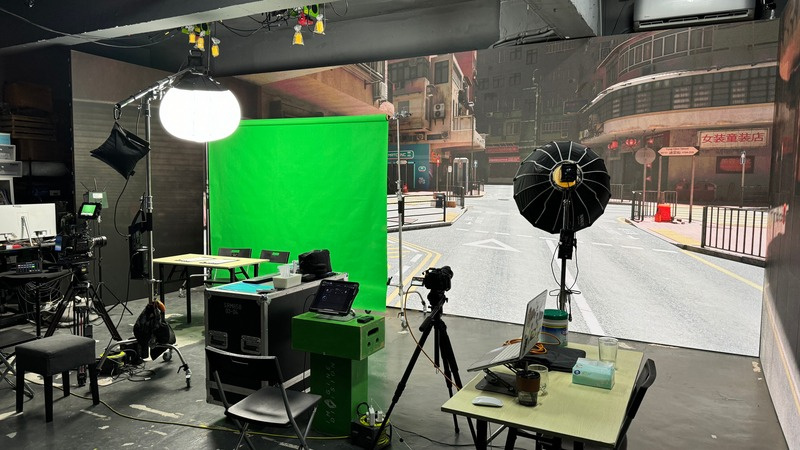

2024
第三屆「一帶一路」青年發展高峰論壇
Imagine Division 為第三屆《一帶一路》青年發展高峰論壇提供全面活動製作服務，涵蓋前期策劃、場地準備、文化主題設計、活動協調、現場管理及後期製作，確保論壇在正式場合中保持清晰流程與穩定執行。
查看項目
2024
Imagine Division 為第三屆《一帶一路》青年發展高峰論壇提供全面活動製作服務，涵蓋前期策劃、場地準備、文化主題設計、活動協調、現場管理及後期製作，確保論壇在正式場合中保持清晰流程與穩定執行。
查看項目
2023
Top Nova Music Festival 2023 是於觀塘海濱舉行的戶外音樂活動，由 Imagine Division Ltd. 主辦，並與香港廣西社團總會及香港廣西九龍東服務中心共同協作。活動邀請近 30 組本地歌手及樂隊，以多元音樂風格為公眾帶來現場演出體驗。
查看項目
2024
Imagine Division 為 hololive EN Party2Gather 香港活動提供 LED Wall、技術方案及舞台管理支援。此項目屬 hololive EN 在香港舉行的官方合作活動，重點在於把 VTuber 內容、現場觀眾體驗及穩定技術執行結合。
查看項目
2023
Luminous Nexus Anime Fiesta 2023 是由 Imagine Division Ltd. 呈獻的動漫同人活動，項目由概念、活動策劃、技術方案到現場執行完整製作。活動結合同人攤位、舞台演出及沉浸式現場體驗，並於全新場地中建立具規模的動漫文化聚會。
查看項目
2024
Imagine Division 為 VTuber Only HK 2024 提供技術方案及舞台管理服務，支援香港本地動漫與 VTuber 文化活動的現場流程、舞台內容及技術執行。
查看項目
Event Production
VirtualCarnival 2025 是 Imagine Division「Event Production」範疇中的專案實例。
查看項目
2023
MOP 1st Live Concert 是香港首個結合 XR 技術、把 VTuber 帶入現實舞台的音樂 Live Concert 之一，由 Imagine Division Ltd. 呈獻並與 Mic On Project 共同協作。活動更與香港本地樂隊 But Nothing Happened 合作演出，將虛擬角色、現場音樂及舞台演出融合。
查看項目
2023
《平行幻想 Parallel Phantasia》Official Music Video 將 XR、Metaverse、Motion Capture、Virtual Production、傳統音樂錄像拍攝及 3D Animation 結合，為乙女新夢打造跨越現實與虛擬的影像世界。
查看項目2022
《GHOST》Cosplay Music Video 以星街すいせい三周年原創曲為創作基礎，圍繞「被看見的是角色、名字，還是真正的她」這個命題，運用 Unreal Engine 4 及虛擬製作流程建立具象徵性的音樂影像。
查看項目
To confirm. The detail page archive shows 2022, while project listings show 2023.
此音樂錄像以 In-Camera VFX、UE4 及 LED Volume 進行虛擬製作拍攝，配合歌曲「一點一滴的痛累積一事一智的課」的情感命題，將成長、傷痛與回望轉化為具空間感的影像場景。
查看項目
Virtual Production
YWCA 虛擬製作課程 是 Imagine Division「Virtual Production」範疇中的專案實例。
查看項目
Web3.0 and AI Engineering
100毛AI寫真 是 Imagine Division「Web3.0 and AI Engineering」範疇中的專案實例。
查看項目
Web3.0 and AI Engineering
中國建築工程(香港)有限公司《C SMART 智慧工地管理平台》 是 Imagine Division「Web3.0 and AI Engineering」範疇中的專案實例。
查看項目
Web3.0 and AI Engineering
港鐵公司MTR AI宣傳片《Loha Heart》 是 Imagine Division「Web3.0 and AI Engineering」範疇中的專案實例。
查看項目項目索引
| 項目 | 範疇 | 類別 |
|---|---|---|
| 第三屆「一帶一路」青年發展高峰論壇 | 2024 | Event Production |
| TOP NOVA 2023 | 2023 | Event Production |
| Hololive Party2Gather | 2024 | Event Production |
| LNAF 2023 | 2023 | Event Production |
| Vtuber Only HK 2024 | 2024 | Event Production, Virtual Artist Management and Production |
| VirtualCarnival 2025 | Event Production | Event Production, Virtual Artist Management and Production |
| 《Mic On Project 1st Live》 | 2023 | Event Production, Virtual Artist Management and Production |
| 乙女新夢 / 【平行幻想 Parallel Phantasia】 | 2023 | Virtual Production |
| GHOST - 星街すいせい Cosplay Music Video | 2022 | Virtual Production |
| 彭家麗 Angela Pang - 是不是這樣的痛過人才算真正的成長過 (Official Music Video) | To confirm. The detail page archive shows 2022, while project listings show 2023. | Virtual Production |
| YWCA 虛擬製作課程 | Virtual Production | Virtual Production |
| 100毛AI寫真 | Web3.0 and AI Engineering | Web3.0 and AI Engineering |
| 中國建築工程(香港)有限公司《C SMART 智慧工地管理平台》 | Web3.0 and AI Engineering | Web3.0 and AI Engineering |
| 港鐵公司MTR AI宣傳片《Loha Heart》 | Web3.0 and AI Engineering | Web3.0 and AI Engineering |